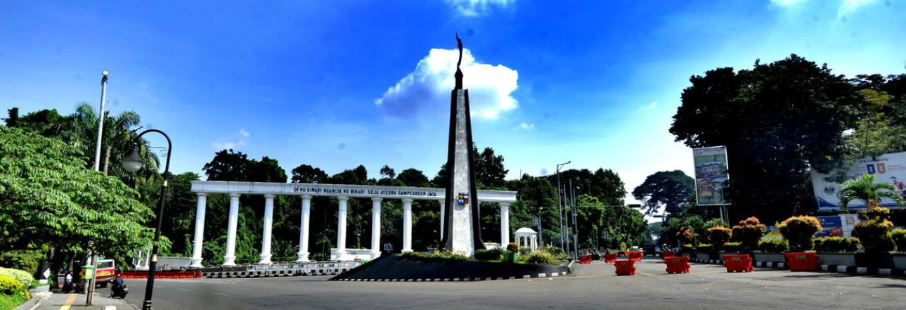
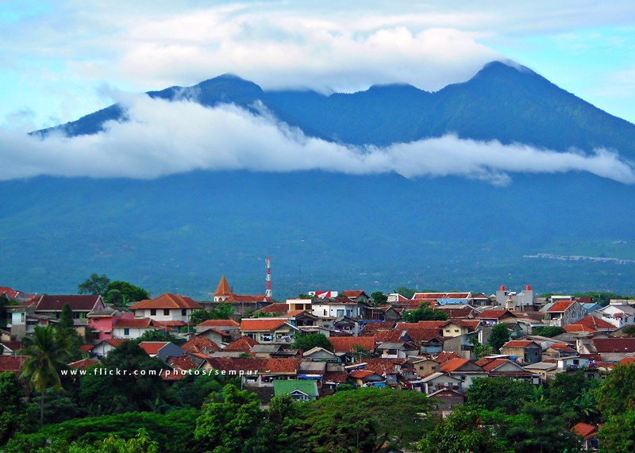
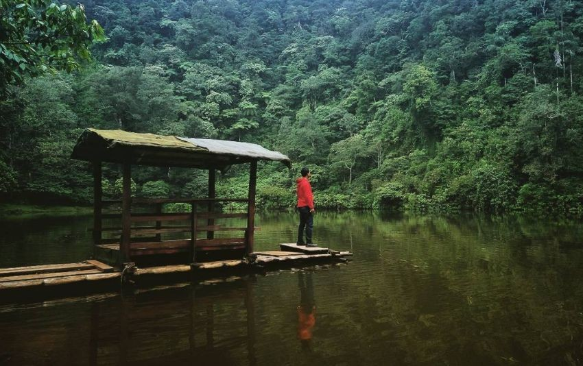
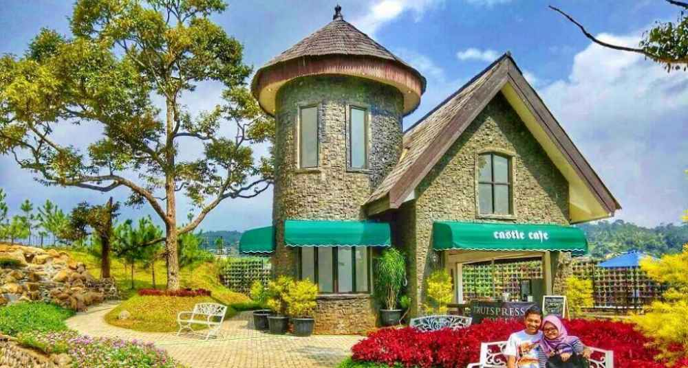
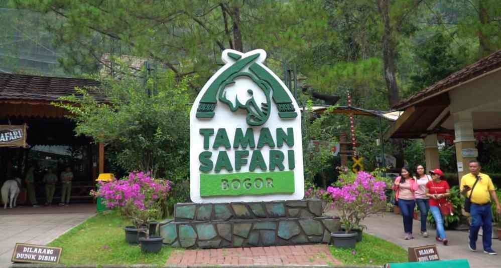
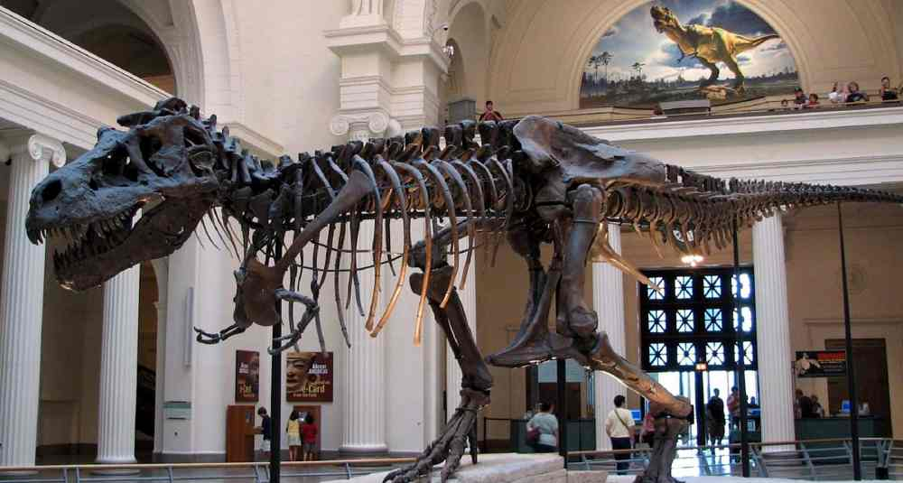

Sejarah

Kota Bogor adalah nama sebuah kota besar yang ada di Provinsi Jawa Barat. Kota ini terletak 59 km dari selatan Jakarta. Kota Bogor berada di tengah-tengah Kabupaten Bogor dan terdiri dari enam kecamatan. Perkembangan Kota Bogor bisa dibilang sangat cepat. Dulu kota ini memiliki luas 21,56 km², tapi kini sudah berkembang menjadi 118,50 km² dengan jumlah penduduk lebih dari 1 juta jiwa pada tahun 2014.
Bogor juga terkenal dengan julukan kota hujan atau rain city, itu karena curah hujannya yang terbilang cukup tinggi dibandingkan kota-kota lain yang ada di Jawa Barat atau Indonesia pada umumnya.
Bogor berada di ketinggian 190 - 300 mdpl dengan udara yang relatif lebih sejuk dan suhu rata-rata tiap bulannya 26 °C dengan kelembaban udara mencapai 70%. Suhu terendah di Bogor adalah 21 °C yang sering berlangsung pada bulan Desember hingga Januari. Dengan kondisi iklim dan suhu yang sejuk itu, maka tak heran kalau pada zaman dahulu Bogor menjadi lokasi favorit Gubernur Jenderal Hindia Belanda pertama untuk mengasingkan diri dari kesibukannya di Batavia.
Di masa kolonial, sejarah Bogor berjuluk Buitenzorg yang artinya tanpa kecemasan. Di sini pula pejabat tertinggi di pemerintahan Hindia Belanda, Baron van Imhoff mendirikan istana peristirahatan pada tahun 1744 yang disebut Sans Souci, dan kelak dikenal sebagai Buitenzorg Pallais atau Istana Bogor kini.
Sejarah hari jadi Kota Bogor diperingati setiap tanggal 3 Juni, karena bertepatan dengan hari penobatan Prabu Siliwangi sebagai Raja yang memerintah di Kerajaan Sunda Pajajaran pada 3 Juni 1482 seperti disebutkan dalam prasasti Batutulis.
Sejak masa penjajahan, Bogor menjadi kawasan yang dikhususkan untuk pendidikan, termasuk pertanian dan peternakan. Di kota yang dulu bernama Buitenzorg ini berdiri beberapa gedung-gedung penelitian yang dikembangkan untuk mendukung perekonomian pemerintah Kerajaan Belanda. Beragam instansi dan balai riset botani dan biologi sudah berdiri sejak abad ke-19,salah satu di antaranya sudah berkembang menjadi Institut Pertanian Bogor.
Geografis

Wilayah Kabupaten Bogor terletak di antara 6º18’0″ – 6º47’10” Lintang Selatan dan 106º23’45” – 107º13’30” Bujur Timur, dengan luas wilayah ± 298.838,304 Ha. Batas-batas wilayah administrasinya yaitu : Sebelah Utara berbatasan dengan Kota Tangerang Selatan, Kabupaten Tangerang, Kota Depok, Kabupaten/Kota Bekasi; Sebelah Barat berbatasan dengan Kabupaten Lebak; Sebelah Timur berbatasan dengan Kabupaten Karawang, Kabupaten Cianjur dan Kabupaten Purwakarta; Sebelah Selatan berbatasan dengan Kabupaten Sukabumi dan Kabupaten Cianjur; sedangkan di Bagian Tengah berbatasan dengan Kota Bogor. Secara administratif, wilayah Kabupaten Bogor terdiri dari 40 kecamatan yang di dalamnya meliputi 416 desa dan 19 kelurahan (435 desa/kelurahan), yang tercakup dalam 3.882 RW dan 15.561 RT.
Topografi Kabupaten Bogor bervariasi, dari dataran yang relatif rendah di bagian utara hingga dataran tinggi di bagian selatan, yang dikelompokkan berdasar ketinggiannya sebagai berikut : sekitar 29,28% berada pada ketinggian 15-100 meter di atas permukaan laut (dpl), 42,62% berada pada ketinggian 100-500 meter dpl, 19,53% berada pada ketinggian 500-1.000 meter dpl, 8,43% berada pada ketinggian 1.000-2.000 meter dpl dan 0,22% berada pada ketinggian 2.000–2.500 meter dpl. Selain itu, kondisi morfologi Kabupaten Bogor sebagian besar berupa dataran tinggi, perbukitan dan pegunungan dengan batuan penyusunnya didominasi oleh hasil letusan gunung, yang terdiri dari andesit, tufa dan basalt. Gabungan batu tersebut termasuk dalam sifat jenis batuan relatif lulus air dimana kemampuannya meresapkan air hujan tergolong besar. Jenis pelapukan batuan ini relatif rawan terhadap gerakan tanah bila mendapatkan siraman curah hujan yang tinggi. Selanjutnya, jenis tanah penutup didominasi oleh material vulkanik lepas agak peka dan sangat peka terhadap erosi, antara lain Latosol, Aluvial, Regosol, Podsolik dan Andosol. Oleh karena itu, ada beberapa wilayah di Kabupaten Bogor yang rawan tanah longsor.
Secara klimatologis, wilayah Kabupaten Bogor termasuk iklim tropis sangat basah di bagian selatan dan iklim tropis basah di bagian utara, dengan rata-rata curah hujan tahunan 2.500–5.000 mm/tahun, kecuali di wilayah bagian utara dan sebagian kecil wilayah timur curah hujan kurang dari 2.500 mm/tahun. Suhu rata-rata di wilayah Kabupaten Bogor adalah 20°- 30°C, dengan suhu rata-rata tahunan sebesar 25°C. Kelembaban udara 70% dan kecepatan angin cukup rendah, dengan rata–rata 1,2 m/detik dengan evaporasi di daerah terbuka rata–rata sebesar 146,2 mm/bulan.
Sedangkan secara hidrologis, wilayah Kabupaten Bogor terbagi ke dalam 8 (delapan) buah Daerah Aliran Sungai (DAS) yaitu : (1) DAS Cidurian; (2) DAS Cimanceuri; (3) DAS Cisadane; (4) DAS Ciliwung; (5) DAS Cileungsi; (6) DAS Cikarang; (7) DAS Cibeet dan (8) DAS Ciberang. Selain itu juga terdapat 32 jaringan irigasi pemerintah, 900 jaringan irigasi pedesaan, 95 situ dan 201 mata air.
Struktur penggunaan lahan di wilayah Kabupaten Bogor dikelompokkan menjadi : sawah irigasi/tadah hujan seluas 69.959,37 ha (22,89%), kebun campuran seluas 62.965,17 ha (21,07%), semak belukar seluas 52.575,49 ha (17,20%), hutan seluas 40.576,7 ha (13,58%), permukiman seluas 40.790 ha (13,35%), ladang/tegalan seluas 33.815 ha 11,06% serta selebihnya berupa badan air dan rawa.
Demikianlah kondisi demografis daerah Kabupaten Bogor. Informasi ini kami sajikan agar masyarakat, khususnya warga Kabupaten Bogor, bisa lebih mengenali dan memahami. Sementara kaitannya dengan pariwisata adalah informasi kondisi wilayah ini bisa dijadikan referensi untuk memahami daerah yang akan dikunjungi sebagai destinasi wisata.
Wisata
Kawasan Bogor, Jawa Barat, memang gak ada matinya. Kawasan berhawa sejuk ini seringkali menjadi desitinasi favorit, meski selalu punuh sesak.
Selain mudah dijangkau, kawasan Puncak Bogor juga menawarkan suasana yang berbeda, sejuk, dan menyegarkan. Kulinernya pun relatif murah-murah.
Nah, buat kamu yang berencana menghabiskan liburan akhir tahun di Bogor, berikut rekomendasi spot-spot atau tempat wisata di Bogor yang Instagramable dan bisa kamu kunjungi bersama pasangan atau keluarga.
Telaga Warna Puncak Cisarua

Selain di Dieng, Jawa Tengah, Telaga Warna juga berada di kawasan Puncak, atau tepatnya di Jalan Raya Puncak, Cianjur, Desa Tugu Utara, Cisarua. Warna air danau di sini bisa berubah dari kehijauan menjadi kuning terang, bahkan cokelat.
Selain dapat menikmati pemandangan alam yang memesona, kamu juga bisa mencoba beberapa fasilitas yang disediakan, seperti jogging track, flying fox, dan menara setinggi 13,5 meter yang difungsikan untuk mengamati satwa di kawasan Telaga Warna.
De Ranch Megamedung

Keunikan dari tempat wisata Bogor satu ini adalah pengalaman mengeksplorasi dunia Koboi yang ditawarkannya.
Tak hanya merasakan suasana pedesaan ala barat dan keindahan taman bunga, Toppers juga bisa mencoba menunggangi Kuda atau mencoba olahraga memanah layaknya seorang koboi.
Selain berbagai wahana menarik lainnya, tempat ini juga menawarkan berbagai kuliner lezat yang dibisa dinikmati sembari memandang panorama alam Bogor yang asri.
Taman Safari Indonesia

Taman Safari Indonesia telah lama jadi pilihan tempat wisata yang populer di Bogor. Selain bisa melihat berbagai species fauna, Toppers bersama keluarga bisa melihat berbagai pertunjukkan dan juga berinteraksi langsung dengan berbagai fauna yang jinak.
Untuk menambah seru liburanmu, objek wisata keluarga di Bogor satu ini juga dilengkapi dengan berbagai wahana permainan seru mulai dari yang menguji adrenalin hingga wahana permainan yang bisa dinikmati anak-anak kecil.
Museum Zoologi

Berselebahan dengan Kebun Raya Bogor, terdapat tempat wisata favorit kota Bogor lainnya yang bisa kamu kunjungi.
Museum yang telah mulai mengumpulkan koleksi satwa sejak 1894 ini menyimpan jutaan fosil satwa mulai dari mamalia, unggas, hingga berbagai jenis serangga dan ikan.